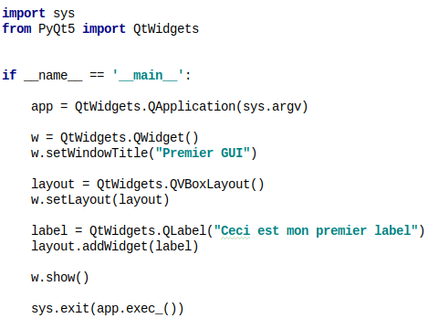
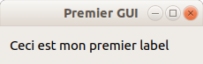
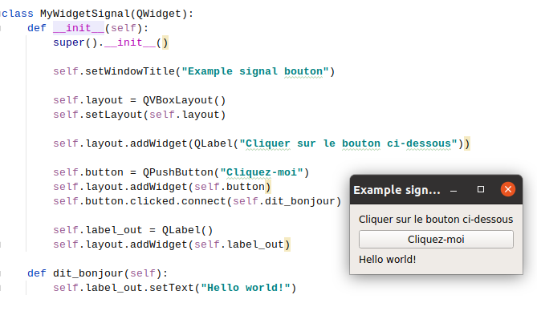
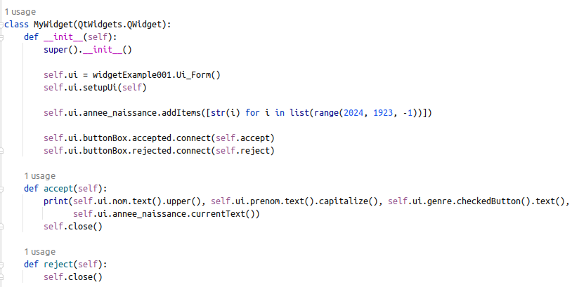
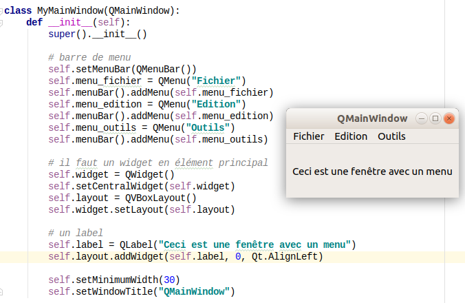
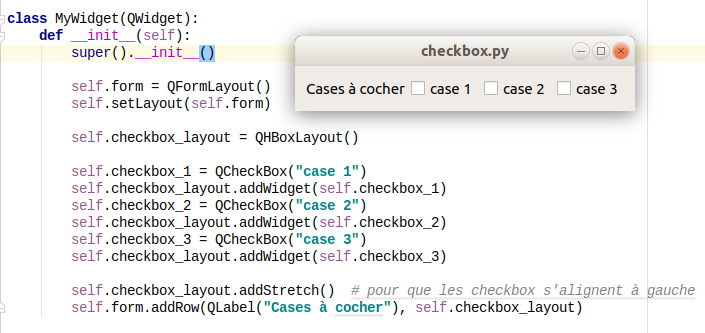
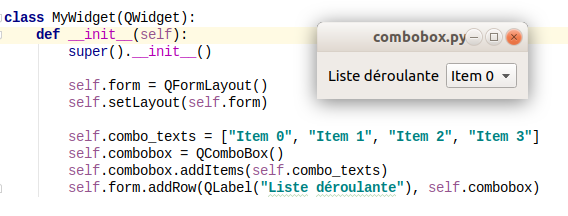
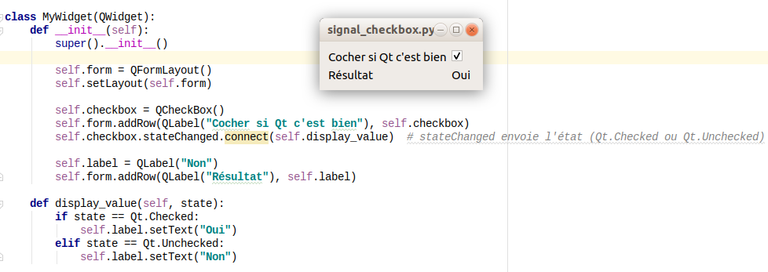

Python - GUI avec Qt

Dimitri Dubois
Contenu
Introduction
Qt
- bibliothèque logicielle offrant des composants d'interface graphique (widgets)
- développée par Trolltech depuis 1991
- développée en C++
- sous licence LGPL ou propriétaire
- utilisée par Google, Skype, Boeing, Adobe ...
- actuellement version 6 (Qt6)
Autres bibliothèques graphiques
- .NET (windows)
- Cocoa (Mac os)
- GTK (Linux)
- wxWidgets
Modules de Qt
- QtCore: boucle événementielle, mécanisme signaux/slots, threads ...
- QtGui: images, couleurs ...
- QtWidgets: éléments graphiques (fenêtres, labels, boutons, boutons radio ...)
- QtWebKit: intégration des languages du web
- QtMultimedia: audio et vidéo
- liste de tous les modules: ici
Avantages de Qt
- multiplateforme
- gratuit
- simple d'utilisation
- communauté importante
- documentation très complète - liste de toutes les classes
PyQt
- bibliothèque pour lier Python et Qt
- les éléments graphiques Qt peuvent être créés en python
- le module le plus utilisé dans ce cas est le module QtWidgets
from PyQt5 import QtWidgets
Module QtWidgets
Le module comporte un certain nombre d'objets utiles
- application : QApplication
- fenêtres: QMainWindow, QDialog, QWidget
- layout: QVBoxLayout, QHBoxLayout, QGridLayout, QFormLayout
- boutons: QPushButton, QRadioButton, QCheckBox
- saisies: QTextEdit, QLineEdit, QSpinBox ...
- affichages: QLabel, QWebView, QGraphicsView, QLCDNumber ...
Etapes pour créer une application graphique
- créer instance de QApplication -> crée une application Qt
- créer une fenêtre
- ajouter un layout (canevas) et des widgets (labels, boutons etc.) à la fenêtre
- démarrer une boucle événementielle qui écoute les événements utilisateur, et qui se terminera à la fermeture de l'application
Exemple
 Objet QApplication
- création d'une instance de QApplication
sys.argvcontient le chemin du fichier lancé et les éventuelles options passées au lancement app.exec_()démarre une boucle qui écoute les événements (clic souris, touches clavier ...)sys.exit(app.exec_())termine le processus lorsque la boucle de l'application s'arrête (fermeture de l'application)
Récupérer ou modifier les attributs des objets Qt
pour un attribut quelconque
mutateur: setQuelconque(valeur)
accesseur: quelconque()
Héritage
création de classes qui héritent des classes de QtWidgets
Pratique
Créer un fichier premierWidget.py et écrire le code précédent pour créer votre première application graphique
Qt Designer
- pour créer les interfaces graphiques manuellement, sans écrire le code
- outil fourni par Qt
- l'interface graphique est enregistrée au format xml avec l'extension *.ui
- la commande pyuic5 fichier.ui -o fichier.py transforme le fichier ui en fichier py
- le fichier python peut ensuite être importé comme tout autre module
- dans anaconda ouvrir un terminal et taper designer
Pratique
Ouvrir Qt-Designer (commande designer dans la console anaconda), créer un widget et
y placer des
éléments
Transformation du fichier *.ui en fichier *.py
dans un terminal, via anaconda, se placer dans le dossier du fichier *.ui et taper la commande
pyuic5 fichier.ui -o fichier.py
Utilisation du fichier py généré
- importer le module
- créer une classe qui hérite de QtWidgets
- dans cette classe instancier l'objet du module et le placer dans un attribut de la classe (self.ui par exemple), appeler la méthode setupUi
Pratique
transformer la fenêtre de l'exercice pratique précédent en code python, puis écrire le code pour la faire afficher.
Signaux et slots
- les widgets émettent des signaux (clic sur un bouton, sélection d'une checkbox, fermeture d'une fenêtre etc.)
- les signaux peuvent être connectés à des slots (fonctions appelées lorsque le signal est émis)
- pour connecter un signal à un slot:
widget.signal.connect(slot) - pour connaître les signaux émis par un widget il faut se référer à la documentation du
widget (ou de sa classe mère)
Exemple signaux émis par un QPushButton
QPushButton - clicked
Principaux signaux
- QPushButton, QRadioButton: clicked, pressed, released
- QDialogButtonBox: accepted (bouton OK), rejected (bouton Cancel)
- QLineEdit: textChanged(QString), editingFinished
- QTextEdit: textChanged
- QCheckBox: stateChanged(int state)
- QComboBox: currentIndexChanged(int index)
- QAction (ajoutée à QMenu): triggered
Connecter le bouton Cancel à une fonction qui ferme la fenêtre, et le bouton Ok à une fonction qui récupère le contenu des widgets et les affiche dans la console.
Pour aller plus loin ...
Les slides qui suivent donnent des détails sur les différents éléments graphiques
Les fenêtres
- QMainWindow: fenêtre principale d'une application (avec menus etc.)
- QDialog: fenêtre de dialogue (souvent modale)
- QWidget: fenêtre simple
QMainWindow
- objet QMenuBar pour une barre de menu
- setMenuBar(la_barre_de_menu)
- objet QMenu pour un menu
- la_barre_de_menu.addMenu(le_menu) pour ajouter le_menu à la barre de menu
- les sous-menus sont des QAction()
self.ma_barre_de_menu = QMenuBar()
self.setMenuBar(self.ma_barre_de_menu)
self.menu_fichier = QMenu("Fichier")
self.ma_barre_de_menu.addMenu(self.menu_fichier)
self.action_quitter = QAction("Quitter", self)
self.menu_fichier.addAction(self.action_quitter)
il faut ajouter un widget à la fenêtre avec la méthode setCentralWidget
QDialog
- fenêtre modale (attachée à une autre fenêtre)
Les layout
- QVBoxLayout: layout vertical
- QHBoxLayout: layout horizontal
- QFormLayout: layout pour les formulaires (2 colonnes), cf. exemple ici
- QGridLayout: grille
QGridLayout
- remplissage cellule par cellule, numérotation commence à 0
Principaux widgets
QLabel
- peut aussi servir à afficher une image
QLineEdit et QTextEdit
- QLineEdit: pour saisie/affichage sur une ligne
- QTextEdit: pour saisie/affichage multiligne. Accepte le html
QPushButton et QDialogBoxButton
- QPushButton: bouton standard -
bouton = QPushButton("OK") - QDialogBoxButton: bouton pour les boîtes de dialogue (cf. ici)
QRadioButton
- un QRadioButtonGroup pour grouper les boutons
- un horizontal layout pour mettre les boutons les uns à côté des autres
QCheckBox
QComboBox
Les boîtes de dialogue
Signaux avec arguments
si le signal envoie un argument alors il faut le déclarer dans le slot
